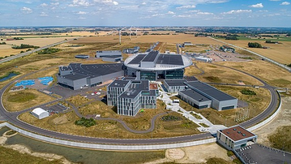

En la Tierra comenzarán a funcionar o a arrojar datos algunas nuevas instalaciones de investigación.

En el terreno de la astronomía, el observatorio Vera C. Rubin de Chile, llamado así en honor a la astrónoma que descubrió
la materia oscura, estará equipado con la mayor cámara digital jamás construida, cuyas imágenes serán tan grandes que para
visualizar una sola se necesitarían 370 televisores 4K de ultra alta definición. En el campo de la física fundamental,
la European Spallation Source (fuente de espalación europea, situada en Suecia) será el acelerador lineal de protones más
potente del planeta, que permitirá estudiar la estructura de la materia. En China, a 700 metros bajo tierra, se pondrá en marcha
el detector de neutrinos JUNO (Jiangmen Underground Neutrino Observatory), que ofrecerá una excelente resolución en el estudio
de estas partículas.No será una nueva instalación, pero sí un nuevo objetivo largamente deseado para el conjunto de
radiotelescopios Karl G. Jansky Very Large Array (VLA) en Nuevo México. En la película de 1997 Contact la astrónoma interpretada
por Jodie Foster descubría ahí la primera señal alienígena. En 2023 un nuevo instrumento de procesamiento de señales llevará a la
vida real ese reto para el VLA, en su primera gran campaña de Búsqueda de Inteligencia Extraterrestre (SETI). Y sin abandonar el
terreno alienígena, llegarán los resultados del comité seleccionado por la NASA para estudiar las posibles evidencias de ovnis,
aunque los expertos no esperan grandes sorpresas.